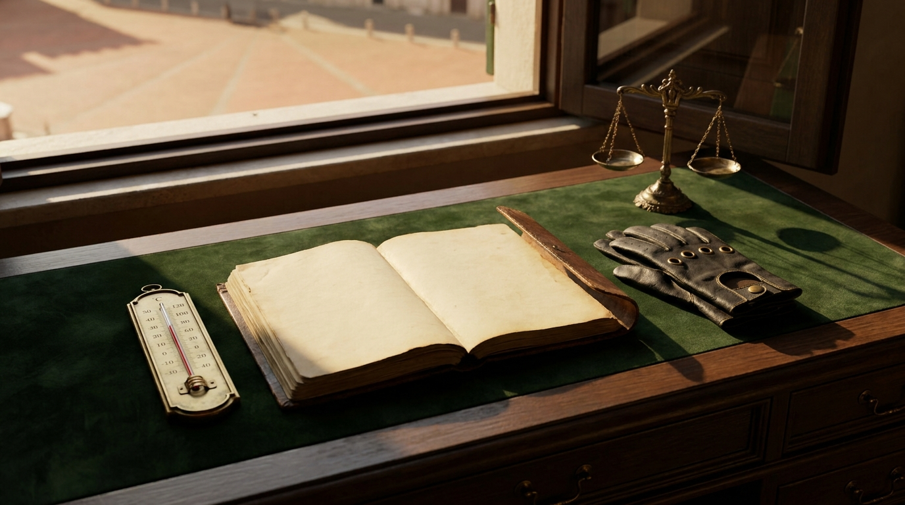

Caldo estremo e stop al lavoro: le ordinanze regionali 2026
Diverse Regioni hanno firmato ordinanze che vietano il lavoro all'aperto nelle ore centrali della giornata durante le ondate di calore. Non si tratta di una novità isolata: le misure si innestano su obblighi di sicurezza già esistenti e ne accentuano la portata, riducendo i margini per giustificare l'inerzia datoriale di fronte a un rischio ormai conclamato.

Il quadro: ordinanze regionali su un terreno già normato
Dal 10 giugno 2026 più Regioni hanno adottato ordinanze contingibili e urgenti che sospendono le attività lavorative all'aperto nelle fasce orarie più calde (di norma tra le 12.30 e le 16.00) nelle giornate di rischio elevato. Il fondamento è l'art. 32 della L. 833/1978, che attribuisce a Regioni e Comuni il potere di ordinanza in materia di igiene e sanità pubblica.
Queste ordinanze non creano un obbligo dal nulla. Si collocano accanto a doveri già pienamente vigenti: l'art. 2087 c.c., che impone all'imprenditore di adottare tutte le misure necessarie a tutelare l'integrità fisica dei lavoratori, e il D.lgs. 81/2008. Quest'ultimo prevede all'art. 17 l'obbligo non delegabile di valutazione dei rischi e all'art. 28 la valutazione di tutti i rischi, compreso il microclima severo, oggetto anche dell'Allegato IV.
Cosa cambia davvero: il rischio diventa conclamato
L'effetto giuridico più rilevante dell'ordinanza non è tanto il divieto in sé, quanto la sua funzione probatoria. Quando un atto pubblico qualifica formalmente determinate ore come pericolose, il rischio da calore cessa di essere un'eventualità astratta e diventa un dato conclamato e conoscibile.
Di conseguenza si restringono gli spazi per giustificare l'assenza di misure. Un datore che non adegui l'organizzazione del lavoro difficilmente potrà sostenere di non aver potuto prevedere il pericolo. Sul piano operativo, il riferimento tecnico richiamato da molte ordinanze è la mappa previsionale Worklimate del CNR-INAIL: si tratta di uno strumento di supporto, la cui rilevanza vincolante deriva dall'ordinanza che lo recepisce, non dalla mappa in quanto tale.
Va segnalato anche il Protocollo quadro sottoscritto nel 2023 tra l'Ispettorato Nazionale del Lavoro e le parti sociali sul rischio da esposizione al caldo, che fornisce il contesto operativo entro cui collocare le buone prassi e gli accordi aziendali.
Il doppio fronte di responsabilità
La violazione delle ordinanze espone su due piani distinti.
Sul fronte amministrativo, il mancato rispetto dell'ordinanza sindacale o regionale è sanzionabile in via autonoma, oltre alle sanzioni previste dal D.lgs. 81/2008 per le carenze nella valutazione del rischio.
Sul fronte civile e penale, se l'esposizione al calore provoca un infortunio si apre la responsabilità del datore. In caso di lesioni rileva l'art. 590 c.p. (lesioni personali colpose); nell'ipotesi di evento mortale si configura l'art. 589 c.p. (omicidio colposo). A ciò si aggiunge la responsabilità civile risarcitoria ex art. 2087 c.c.
Sul fronte degli ammortizzatori
Secondo la prassi dell'INPS, gli eventi meteorologici possono integrare la causale per l'accesso alla cassa integrazione ordinaria (CIGO) per le imprese che ne hanno titolo. Le indicazioni operative — comprese le soglie di temperatura percepita talvolta richiamate nei messaggi dell'Istituto — vanno verificate caso per caso rispetto alla causale concretamente applicabile, perché non costituiscono una regola uniforme e automatica.
Cosa fare in concreto
- Verificare l'ordinanza applicabile alla propria Regione e Comune, individuando fasce orarie e attività interessate; consultare la mappa Worklimate ove richiamata come riferimento tecnico.
- Aggiornare il Documento di Valutazione dei Rischi (DVR) inserendo specificamente il rischio da stress termico, in coerenza con gli artt. 17 e 28 D.lgs. 81/2008 e con l'Allegato IV.
- Riorganizzare i turni, anticipando o posticipando le lavorazioni all'aperto fuori dalle fasce vietate e prevedendo pause in zone ombreggiate.
- Garantire misure operative: acqua, dispositivi di protezione idonei, formazione sul riconoscimento dei sintomi da colpo di calore.
- È opportuno documentare e tracciare la consegna delle informative e le misure adottate, conservandone evidenza scritta.
L'integrazione stabile della gestione del calore nell'organizzazione del lavoro risponde anzitutto a un dovere di legge: la sua corretta attuazione va valutata sulla specifica realtà aziendale.
Disclaimer
Contributo informativo a cura di Tamburro & Partners - Avv. Giuseppe Tamburro. Non costituisce parere legale.
Ogni storia di lavoro ha i suoi tempi.
Se gestisci HR e vuoi un confronto su contenzioso, ispezioni o licenziamenti, scrivi allo studio. Ti rispondiamo entro un giorno lavorativo.